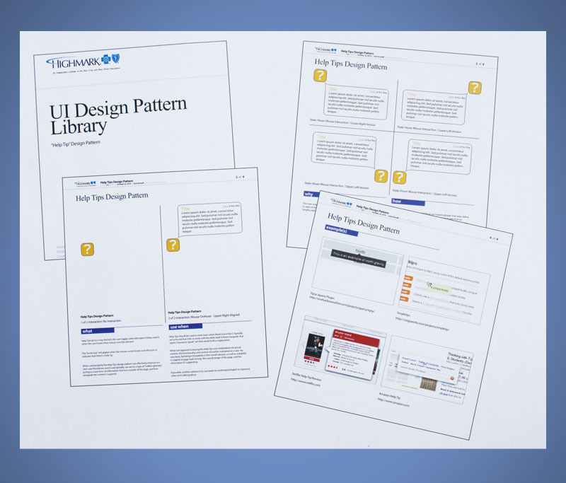
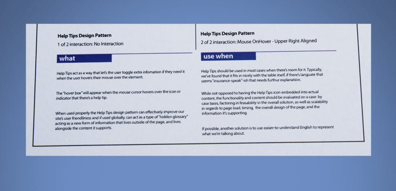
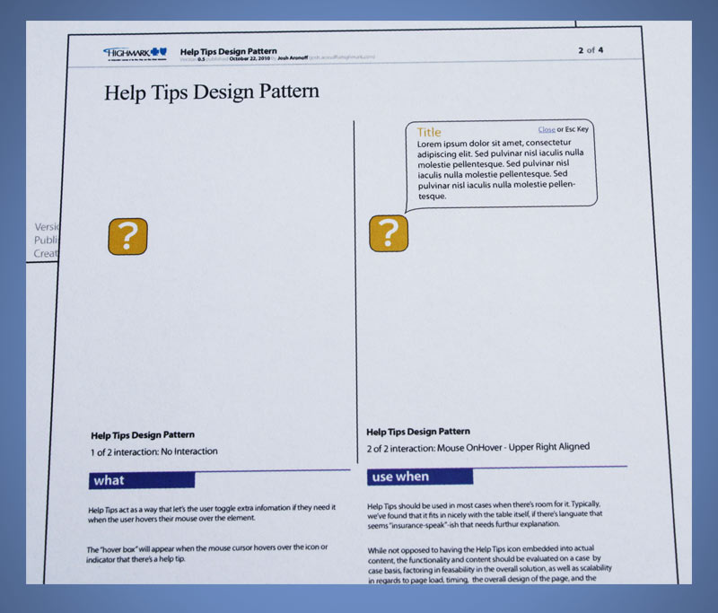

General Dynamics
Josh Aronoff Portfolio Presentation
Email me at:
Josh Aronoff
/
@jaronoff
Phone: 412-613-2500
What I'm going to talk about
- What I'm about
- Some of my previous work, obstacles and solutions.
- How I solve problems and work.
- Questions? From you... from me
What are your needs?
FTI needs someone in this UX Designer role who can...
- perform UX Audits
- make UX Standards and Specs
- crank out storyboards, user flows and wireframes
- create clean, well designed finished products
- hack through some HTML and CSS
Well, that's me.
I'll show you some of my work across each of these needs and answer any questions you may have.
If you have a question, jump in!FTI Needs Someone
Who Can Perform UX Audits
Problem
Highmark Medicare needed to redesign their medicare website in a short amount of time, had some money for testing and wanted to see how far they could push their web presence.
Highmark BCBS Medicare Site Redesign
Highmark BCBS Medicare Site Redesign
Obstacles
- Needed to be tested in about 2 weeks.
- Was a complete redesign.
- Had to be CMS (Centers for Medicare and Medicaid Services) approved
- Had complex rules that were confusing to the user.
Solution
- Break apart the information and reorganize.
- Move interactions to be more relevant in the site. example: Not pick a county right at page load.
- We had to work iteratively. Test what we can in the short amount of time.
- Had to be open to change. Testing could affect everything.
- Completed Redesign for testing in 2 weeks using Fireworks and libraries of created symbols.
FTI Needs Someone
Who Can Make UX Standards and Specs.
Problem
Highmark BCBS has lots of uses cases. They create lots of documentation for regulatory reasons and at times that can stimy development.
Highmark BCBS Help Tip Design Pattern
Highmark BCBS Help Tip Design Pattern
Highmark BCBS Help Tip Design Pattern
Obstacles
- We started to use more complex interactions, but they weren't specific to specific use cases.
- Needed something that lived "above" use cases or stories.
- Needed to explain these interactions and get buy-in from the business.
Solution
- Create small PDFs that acted as "educational material" that could be passed out to anyone.
- Make them standardized, so that you could give several of them and people could understand lots of information in a short amount of time.
- Define "What", "Where", "How" and "Where else" on the internet to foster buy-in.
FTI Needs Someone
Who Can Crank Out Storyboards, Userflows and Wireframes
UI Screen Documentation
Golfing App Wireframe
Golfing App Wireframe
Golfing App Wireframe
Golfing App Wireframe
Highmark Search App
Highmark Search A Hospital
Highmark Search A Retail Clinic
Highmark Find a Doctor
Highmark Find a Doctor
FTI Needs Someone
Who Can Create Clean, well designed finished products
Problem
eRAD needs to create a responsive marketing website that was within brand and easy to update.
eRAD.com Sitemap
eRAD.com Responsive Website
eRAD.com Global Header
eRAD.com Navigation
eRAD.com Navigation
eRAD.com Navigation
eRAD.com Home Desktop
eRAD.com Home Tablet
eRAD.com Home Mobile
eRAD.com Under the Hood
eRAD.com Unirad Resources
eRAD.com Unirad Contact Form
Obstacles
- eRAD.com needed to reflect the new brand.
- It needed to be able to be updated easily.
- Needed to showcase customer base.
- Needed to be used by sales as a lead generation tool.
- Was mandated that it had to be responsive.
- Needed to address multiple audiences.
Solution
- Spearheaded a two-day session where we discovered the voice of the customer.
- Created wireframes and information architecture for the site navigation.
- Designed and created all icons, images, collages, etc. for the final website.
- Worked in a project manager role with outside developer, sales and marketing to launch the site.
- Got out of "wireframe-mode" and into "developer collaboration mode" to account for unseen variables that could have impeded launch.
- Developed content blocks that allowed modularity with content, addressing multiple audiences.
Imaging On Call Client Resources Page
FTI Needs Someone
Who Can Hack through some HTML and CSS
This presentation you're looking at.
Not afraid of getting my hands dirty and learning.
Active in learning Rails and new technologies, Git, etc.
Responsive Landing Page (Desktop)
Responsive Landing Page (Tablet)

Responsive Landing Page (Mobile)
Who I Am
A people person.
A creative person.
I love the web and technology.
I love to figure things out.
I love "big problems".
I'm excited!
The UX Designer position looks rewarding, complex and challenging.
FTI Consulting seems like a great place to work.
I look forward to making exciting and challenging things with you!
Thank you for your time!
Any questions?
Email me at:
Josh Aronoff
/
@jaronoff
Phone: 412-613-2500